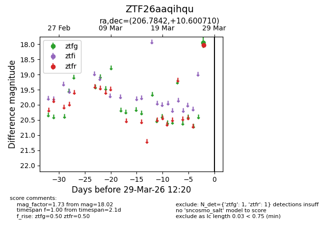
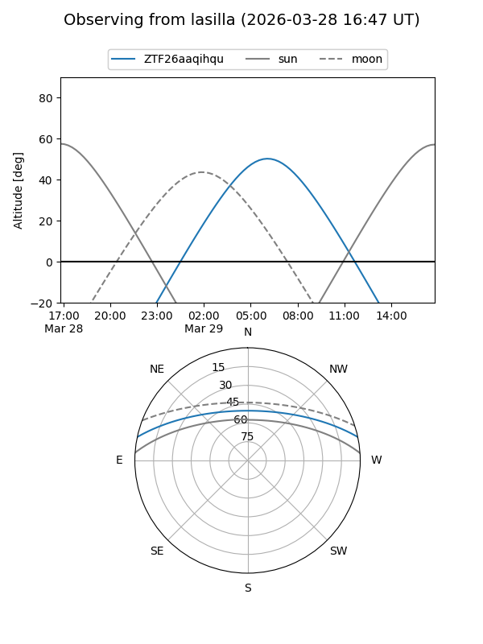
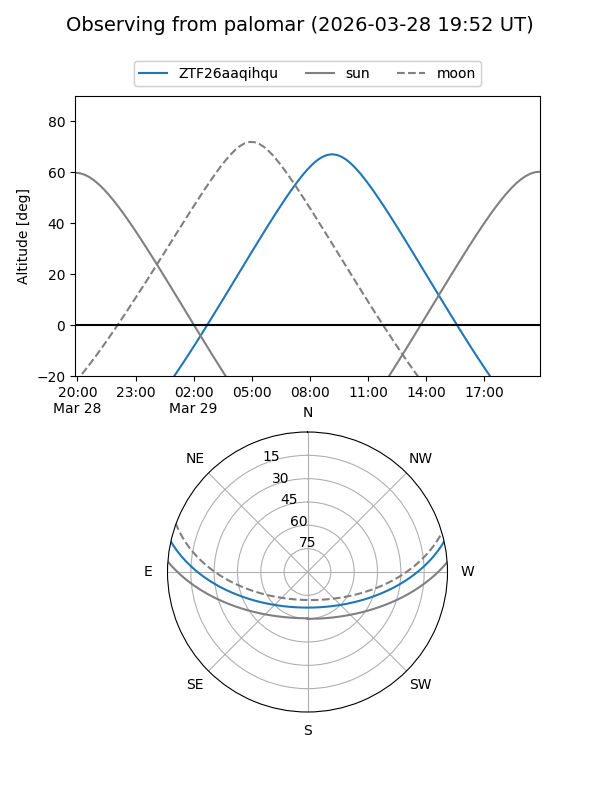

ZTF26aaqihqu
Target ZTF26aaqihqu at 2026-03-29 12:23
Aliases and brokers:
FINK: link
Lasair: link
ALeRCE: link
alt names
ZTF26aaqihqu (ztf,fink_ztf)
Coordinates:
equatorial (ra, dec) = 206.7842,+10.60071
equatorial (HMS+DMS) = 13:47:08.21,+10:36:02.56
galactic (l, b) = (344.0159,+68.90342)
Flags:
Photometry:
last ztfg=17.95, ztfr=18.02
1 ztfg, 1 ztfr detections
Lightcurve

Visibility


Additional plots